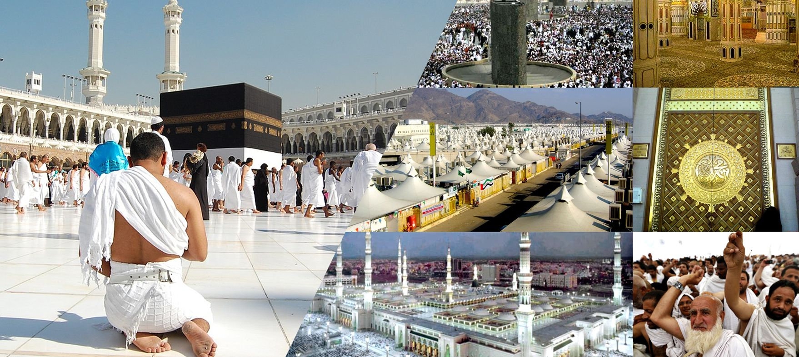

Planning an Umrah journey from London requires more than choosing a departure date. You also need to consider your budget, hotel location, flights and travel arrangements. Comparing affordable UK Umrah packages can help you understand the available options before making a booking.
Every pilgrim has different needs. Some people prefer a short trip, while others want more time in Makkah and Madinah. Families may need larger rooms and convenient flights. First-time pilgrims may also want additional guidance before travelling.
A clear plan can make the whole experience easier. The following points will help you prepare for your journey and make a more informed travel decision.
1. Why Plan Your Umrah Journey from London Early?
London offers several travel options for pilgrims heading to Saudi Arabia. However, flight availability, departure dates and hotel prices can vary throughout the year. Starting your search early gives you more time to compare different arrangements.
You can start by exploring Umrah packages from London and checking which itineraries match your preferred travel dates. Look at the complete package rather than focusing only on the advertised price.
Also think about how you will reach the departure airport. If you live outside London, consider train fares, parking costs and the time needed to reach the terminal. Arriving with enough time can make the start of your journey less stressful.
Popular school holiday periods can have higher demand. Therefore, avoid leaving your booking until the last minute, particularly when travelling with a group.
2. How to Find the Right Umrah Package for Your Budget
The cheapest package is not always the most suitable. A good deal should offer the services you actually need at a price you can comfortably afford.
Compare the hotel standard, flight arrangements, length of stay and transport services. Two packages may have similar prices but offer very different accommodation and travel arrangements.
It is also useful to compare different hotel categories. Three-star accommodation may suit pilgrims who want to keep costs down. Four-star and five-star options may offer additional facilities and different hotel locations.
For a wider look at available choices, Hajj Umrah Travels is one place to review when comparing travel arrangements for UK pilgrims. Check the details of each option and ask questions about anything that is unclear.
Useful tip: Always compare packages for the same travel dates and room occupancy. This gives you a fairer idea of which option offers better value.
3. Compare Flights and Departure Arrangements
Your flight is an important part of the overall travel experience. Check whether your chosen package includes return flights and whether the flight is confirmed or subject to availability.
Look at the total journey time, stopovers, baggage allowance and arrival airport. A direct flight may save time, while a connecting flight may offer a different price. Consider what works best for your circumstances.
Also check whether you will arrive in Jeddah or Madinah. Your arrival airport can affect the transfer arrangements and the order of your stay.
Before paying, request the latest flight information in writing. Do not assume that every package includes the same airline or departure time.
4. What Should an Umrah Package Include?
Understanding the package details can help prevent unexpected expenses. Before confirming your booking, ask the travel company for a clear breakdown of its services.
Depending on the package, important arrangements may include:
- Return flights from the UK, where included.
- Hotel accommodation in Makkah and Madinah.
- Room sharing and occupancy details.
- Visa assistance or relevant entry guidance.
- Airport transfers and intercity transport.
- Meal arrangements, where included.
- Customer support during the booking process.
Ask whether any services are optional and whether additional charges apply. For example, private transfers and certain hotel facilities may cost extra.
5. How Many Nights Should You Spend in Makkah and Madinah?
Your length of stay depends on your available time, budget and personal preferences. A short trip may suit people with limited annual leave, while a longer stay gives you more flexibility.
Seven nights can be suitable for people who want a shorter pilgrimage. Ten nights provide additional time to settle in and visit both holy cities. Fourteen nights may be more comfortable for first-time pilgrims and families who prefer a slower schedule.
Check the division of nights between Makkah and Madinah. Some itineraries include more nights in Makkah, while others provide an equal split.
Think about your priorities before booking. If spending more time near Masjid al-Haram is important to you, choose an itinerary that reflects this preference.
6. Why Hotel Location Matters During Umrah
Hotel location can have a major impact on your daily routine. A property near the holy mosque may make it easier to attend prayers without spending too much time travelling.
In Makkah, check the distance from Masjid al-Haram and consider the walking route. In Madinah, look at the hotel's distance from Masjid an-Nabawi.
Do not depend only on the star rating. A well-located three-star hotel may be more practical for some travellers than a higher-rated property that is further away.
Ask for the confirmed hotel name, room type and available facilities. If you are travelling with older relatives, check lift access and the walking distance to nearby services.
7. How to Manage the Total Cost of Your Umrah Trip
Your travel budget should cover more than the advertised package price. Keep some money aside for meals, shopping, local transport and personal expenses.
Check the payment schedule before confirming your booking. Understand the deposit amount, final payment deadline and any amendment or cancellation charges.
Travelling outside the busiest periods may provide more choice. You can also compare room-sharing options to understand how occupancy affects the final price.
Avoid making a decision based on a very low advertised price without checking what is included. A clear price breakdown makes it easier to plan and manage your spending.
8. Prepare Your Travel Documents in Advance
Check your passport expiry date well before departure. Make sure your booking details and personal information are correct.
Saudi entry requirements can change, so check the latest official guidance for your nationality and travel circumstances. Ask your travel company which documents are required and whether any additional steps apply.
Keep digital and printed copies of your passport details, flight confirmation, hotel booking and emergency contacts.
Travel insurance is also worth considering. Read the policy carefully and check its cover for medical emergencies, cancellation and travel disruption.
9. Important Tips for Families and Older Pilgrims
Travelling with children or older relatives requires extra preparation. Think about comfort during flights, airport transfers and daily visits to the holy mosques.
Choose suitable flight times where possible. Check whether the hotel offers appropriate room arrangements and whether assistance is available for passengers with reduced mobility.
Pack essential medicines in your hand luggage. Comfortable footwear and suitable clothing are also important for a journey that involves considerable walking.
Agree on a meeting point in busy places and save the hotel's contact details on everyone's phone. Small preparations can make travelling as a group much easier.
10. How to Choose a Reliable Umrah Travel Agency
Choosing a travel company is just as important as choosing flights and hotels. Look for clear communication, written booking details and a proper explanation of the services included.
Read customer reviews and check the company's contact information. Ask how it handles flight changes, hotel substitutions and other travel problems.
For UK flight-inclusive bookings, check whether ATOL protection applies. Where applicable, request an ATOL Certificate and make sure the services you have booked are listed.
Take time to understand the booking conditions before making a payment. A trustworthy travel provider should answer reasonable questions and give you clear information.
11. Your Final Umrah Travel Checklist
Before leaving the UK, review your arrangements and make sure you have everything ready.
- Confirm your flight dates and baggage allowance.
- Check your hotel bookings in both cities.
- Prepare your passport and required documents.
- Understand your airport transfer arrangements.
- Arrange travel insurance if needed.
- Pack Ihram clothing and comfortable footwear.
- Save emergency contact details.
- Review the basic steps of Umrah before departure.
Having this information ready can reduce last-minute stress and help you begin your pilgrimage with confidence.
Final Thoughts
Planning Umrah from London becomes easier when you understand your options and prepare in advance. Compare flights, hotel locations, travel dates and package inclusions before making your decision.
The right package is not necessarily the most expensive or the cheapest. It is the one that suits your budget, travel needs and personal circumstances.
Give yourself enough time to organise the practical arrangements. This will allow you to focus more on worship and make the most of your time in Makkah and Madinah.